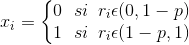

El método de la transformada inversa puede utilizarse para simular variables aleatorias continuas, lo cual se logra mediante la función acumulada F(x) y la generación de números pseudoaleatorios.
La variable aleatoria de Bernoulli con parámetro p puede ser generada a través de la regla de decisión:
Se puede utilizar este método para simular un evento donde una máquina puede o no fallar. Es necesario definir el número de eventos a simular y la probabilidad de que la máquina falle.